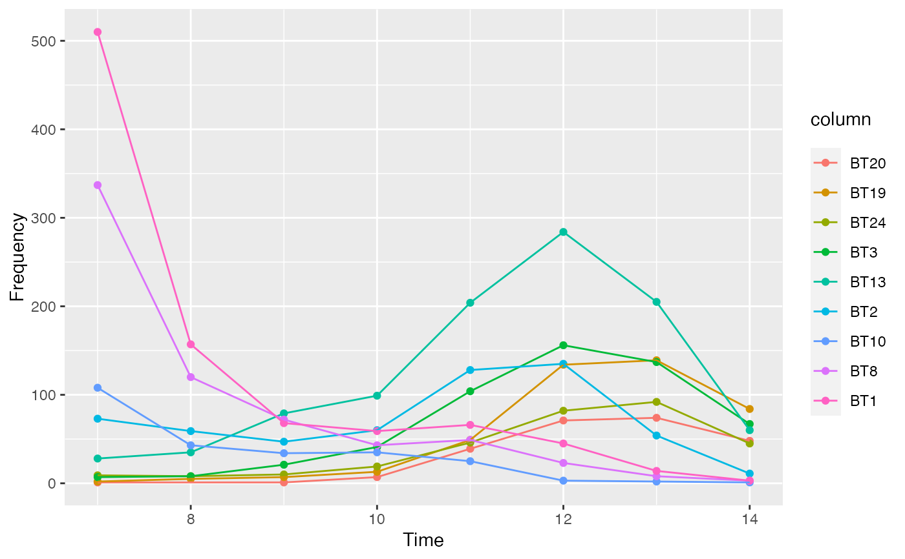
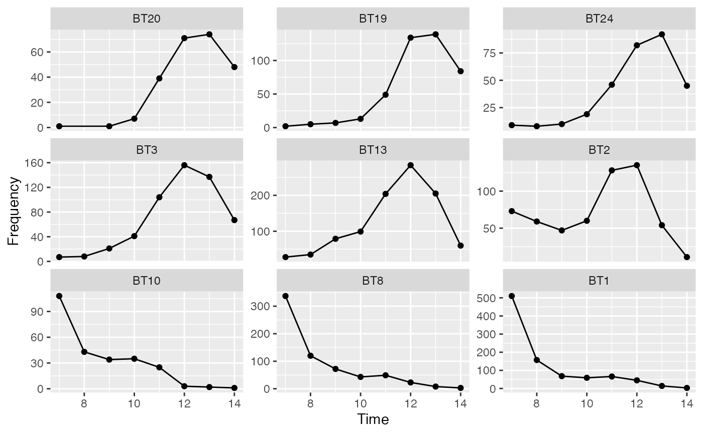

Produces an abundance vs time diagram.
plot_time(object, dates, ...) # S4 method for CountMatrix,numeric plot_time(object, dates, facet = FALSE) # S4 method for AoristicSum,ANY plot_time(object, facet = FALSE) # S4 method for DateMCD,missing plot_time(object, facet = FALSE) # S4 method for IncrementTest,missing plot_time(object, level = 0.95, roll = FALSE, window = 3)
| object | A CountMatrix object. |
|---|---|
| dates | A |
| ... | Currently not used. |
| facet | A |
| level | A length-one |
| roll | A |
| window | An odd |
A ggplot2::ggplot object.
Displaying FIT results on an abundance vs time diagram is adapted from Ben Marwick's original idea.
Results of the frequency increment test can be displayed on an abundance
vs time diagram aid in the detection and quantification of selective
processes in the archaeological record. If roll is TRUE, each time
series is subsetted according to window to see if episodes of selection
can be identified among decoration types that might not show overall
selection. If so, shading highlights the data points where
test_fit() identifies selection.
date_mcd(), sum_aoristic(), test_fit()
Other plotting methods:
plot_event()
N. Frerebeau
data("merzbach", package = "folio") ## Coerce the merzbach dataset to a count matrix ## Keep only decoration types that have a maximum frequency of at least 50 keep <- apply(X = merzbach, MARGIN = 2, FUN = function(x) max(x) >= 50) counts <- as_count(merzbach[, keep]) ## Group by phase ## We use the row names as time coordinates (roman numerals) dates <- as.numeric(utils::as.roman(rownames(counts))) ## Plot abundance vs time plot_time(counts, dates)
plot_time(counts, dates, facet = TRUE)